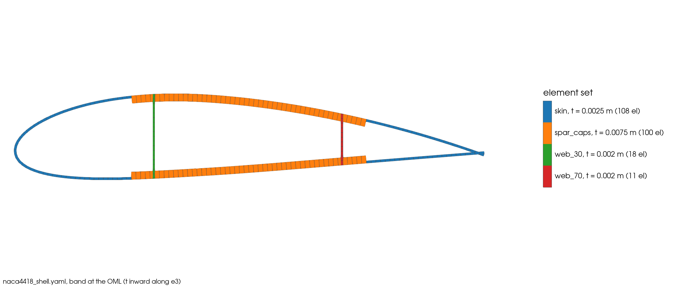
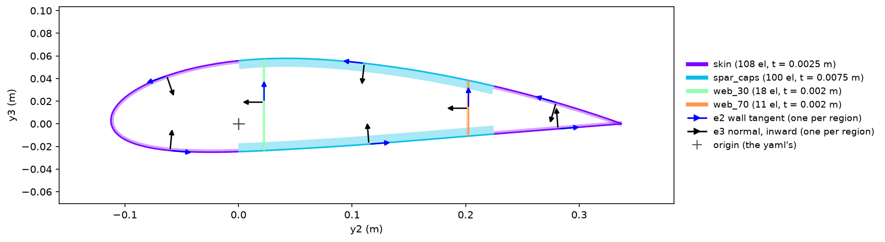
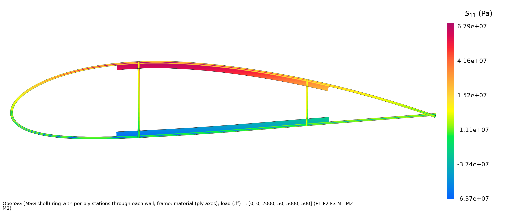
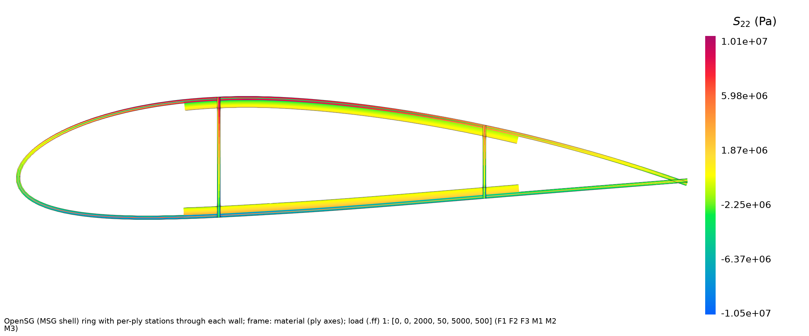
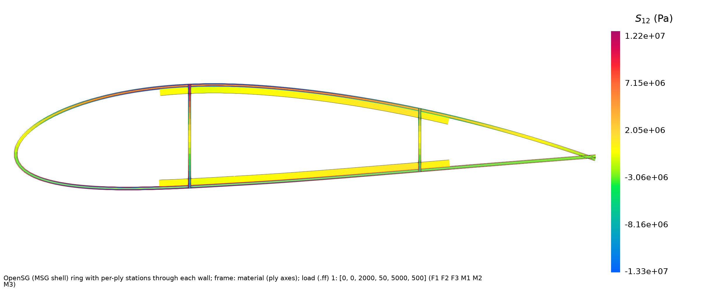

01 NACA 4418 airfoil#
Step 1: Beam properties of the section#
Prompt
Using OpenSG , compute the beam properties of Airfoil NACA 4418, chord 0.45 m, reference axis at the quarter chord, SI units. Skin, outer ply first: [45/-45/0/-45/45] glass/epoxy, 0.5 mm plies. Spar caps: ten extra 0-degree plies of 0.5 mm on both sides between 25 % and 75 % chord. Two shear webs at 30 % and 70% chord: [45/-45/-45/45], 0.5 mm plies. Glass/epoxy: E1 = 41 GPa, E2 = E3 = 14 GPa, G12 = G13 = 4.5 GPa, G23 = 3.5 GPa, nu12 = nu13 = 0.28, nu23 = 0.40, density 1940 kg/m^3. Give me the mesh picture, the full Timoshenko 6x6 stiffness matrix, the mass matrix, and the shear, tension and mass centres.
CompositesAI


NACA 4418 section mesh#


NACA 4418 orientation check#
OpenSG shell-beam result
The OML shell-ring model used 237 elements: 208 skin/cap and 29 web elements. The origin is the requested quarter-chord axis; coordinates below are \((y_2,y_3)\), with \(y_2\) positive toward the trailing edge.
Timoshenko stiffness matrix
Order: \([F_1,F_2,F_3,M_1,M_2,M_3]\) vs. \([\epsilon_{11},\gamma_{12},\gamma_{13},\kappa_1,\kappa_2,\kappa_3]\).
SI generalized units apply: force–strain terms are N, moment–curvature terms are N·m².
Key terms:
\(EA=1.42929\times10^8\) N
\(GA_2=2.88297\times10^7\) N
\(GA_3=2.75287\times10^6\) N
\(K_{44}=1.16967\times10^5\) N·m²
Shear-condensed \(GJ=1/S_{44}=9.12836\times10^4\) N·m²
\(EI_2=1.56068\times10^5\) N·m²
\(EI_3=2.97063\times10^6\) N·m²
Mass matrix
Order: \([u_1,u_2,u_3,\theta_1,\theta_2,\theta_3]\).
The mass per length is 9.44586 kg/m.
Centres
Centre |
\((y_2,y_3)\) from quarter chord |
\(x/c\) from LE |
|---|---|---|
Tension |
(0.110051, 0.015147) m |
0.49439 |
Shear |
(0.068680, 0.020299) m |
0.40246 |
Mass |
(0.108560, 0.014465) m |
0.49108 |
The mesh and orientation-check figures are included, along with the NACA 4418 full properties report.
Checks: all skin normals point inward and both webs have valid orientation. The fine mesh changed \(GA_3\) by 2.17% and \(K_{44}\) by 0.99%; these shear/torsion quantities are mesh-sensitive at web junctions. The 7.5 mm spar-cap thickness is 9.0% of section depth, so a 2-D solid cross-check is recommended for final \(GA_2/GA_3\) certification.
Step 2: Local stresses under shear, torsion and bending#
Prompt
Now recover the stresses in this section under F3 = 2 kN, M1 = 50 N·m, M2 = 5 kN·m and M3 = 0.5 kN·m at the reference axis, and show the stress contour plots of all 6 components.
CompositesAI


Axial stress S11 contour#


Transverse in-plane stress S22 contour#


In-plane shear stress S12 contour#
Stress recovery completed for loads at the quarter-chord axis:
in N and N·m. Contours are in the material ply axes.
Component |
Range |
|---|---|
\(S_{11}\) |
−63.68 to +67.86 MPa |
\(S_{22}\) |
−10.48 to +10.10 MPa |
\(S_{12}\) |
−13.26 to +12.25 MPa |
The three delivered contour files are Axial stress S11 contour, Transverse in-plane stress S22 contour, and In-plane shear stress S12 contour.
A full six-component result is not available from this thin-walled shell recovery: \(S_{13}\), \(S_{23}\), and \(S_{33}\) are transverse stresses that this first-order shell formulation does not recover reliably. In addition, the recovered \(F_3\) resultant missed the 3% acceptance threshold by 3.26%, so treat the in-plane contours as qualitative/local shell results near web junctions. A 2-D solid-section recovery is required for reliable six-component stresses and junction peaks.